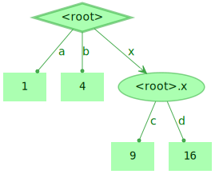
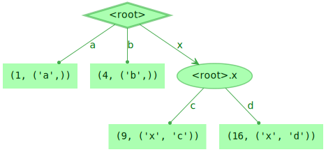
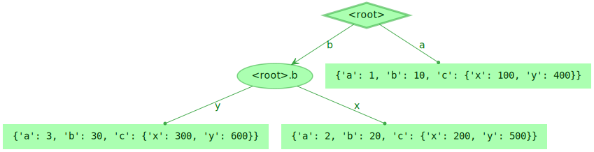

Comparison Between TreeValue and Jax LibTree¶
In this section, we will take a look at the feature and performance of the jax-libtree library, which is developed by Google.
[1]:
_TREE_DATA_1 = {'a': 1, 'b': 2, 'x': {'c': 3, 'd': 4}}
Mapping Operation¶
TreeValue’s Mapping¶
[2]:
from treevalue import mapping, FastTreeValue
t = FastTreeValue(_TREE_DATA_1)
mapping(t, lambda x: x ** 2)
[2]:

[3]:
%timeit mapping(t, lambda x: x ** 2)
3.52 µs ± 30.4 ns per loop (mean ± std. dev. of 7 runs, 100,000 loops each)
[4]:
mapping(t, lambda x, p: (x ** 2, p))
[4]:

[5]:
%timeit mapping(t, lambda x, p: (x ** 2, p))
3.77 µs ± 25.2 ns per loop (mean ± std. dev. of 7 runs, 100,000 loops each)
pytree’s tree_map¶
[6]:
from jax.tree_util import tree_map
tree_map(lambda x: x ** 2, _TREE_DATA_1)
[6]:
{'a': 1, 'b': 4, 'x': {'c': 9, 'd': 16}}
[7]:
%timeit tree_map(lambda x: x ** 2, _TREE_DATA_1)
6.56 µs ± 34.6 ns per loop (mean ± std. dev. of 7 runs, 100,000 loops each)
Flatten and Unflatten Operation¶
TreeValue’s Performance¶
[8]:
from treevalue import flatten, flatten_keys, flatten_values
t_flatted = flatten(t)
t_flatted
[8]:
[(('a',), 1), (('b',), 2), (('x', 'c'), 3), (('x', 'd'), 4)]
[9]:
%timeit flatten(t)
832 ns ± 5.49 ns per loop (mean ± std. dev. of 7 runs, 1,000,000 loops each)
[10]:
from treevalue import flatten_keys
flatten_keys(t)
[10]:
[('a',), ('b',), ('x', 'c'), ('x', 'd')]
[11]:
%timeit flatten_keys(t)
750 ns ± 6.45 ns per loop (mean ± std. dev. of 7 runs, 1,000,000 loops each)
[12]:
from treevalue import flatten_values
flatten_values(t)
[12]:
[1, 2, 3, 4]
[13]:
%timeit flatten_values(t)
555 ns ± 3.49 ns per loop (mean ± std. dev. of 7 runs, 1,000,000 loops each)
[14]:
from treevalue import unflatten
unflatten(t_flatted)
[14]:
[15]:
%timeit unflatten(t_flatted)
983 ns ± 2.48 ns per loop (mean ± std. dev. of 7 runs, 1,000,000 loops each)
pytree’s Performance¶
[16]:
from jax.tree_util import tree_flatten
leaves, treedef = tree_flatten(_TREE_DATA_1)
print('Leaves:', leaves)
print('Treedef:', treedef)
Leaves: [1, 2, 3, 4]
Treedef: PyTreeDef({'a': *, 'b': *, 'x': {'c': *, 'd': *}})
[17]:
%timeit tree_flatten(_TREE_DATA_1)
2.13 µs ± 15.2 ns per loop (mean ± std. dev. of 7 runs, 100,000 loops each)
[18]:
from jax.tree_util import tree_unflatten
tree_unflatten(treedef, leaves)
[18]:
{'a': 1, 'b': 2, 'x': {'c': 3, 'd': 4}}
[19]:
%timeit tree_unflatten(treedef, leaves)
1.02 µs ± 8.93 ns per loop (mean ± std. dev. of 7 runs, 1,000,000 loops each)
All Operation¶
TreeValue’s Performance¶
[20]:
all(flatten_values(t))
[20]:
True
[21]:
%timeit all(flatten_values(t))
669 ns ± 3.74 ns per loop (mean ± std. dev. of 7 runs, 1,000,000 loops each)
pytree.tree_all’s performance¶
[22]:
from jax.tree_util import tree_all
[23]:
tree_all(_TREE_DATA_1)
[23]:
True
[24]:
%timeit tree_all(_TREE_DATA_1)
2.38 µs ± 18.2 ns per loop (mean ± std. dev. of 7 runs, 100,000 loops each)
Reduce Operation¶
TreeValue’s Reduce¶
[25]:
from functools import reduce
def _flatten_reduce(tree):
values = flatten_values(tree)
return reduce(lambda x, y: x + y, values)
_flatten_reduce(t)
[25]:
10
[26]:
%timeit _flatten_reduce(t)
1.29 µs ± 4.42 ns per loop (mean ± std. dev. of 7 runs, 1,000,000 loops each)
[27]:
def _flatten_reduce_with_init(tree):
values = flatten_values(tree)
return reduce(lambda x, y: x + y, values, 0)
_flatten_reduce_with_init(t)
[27]:
10
[28]:
%timeit _flatten_reduce_with_init(t)
1.39 µs ± 8.7 ns per loop (mean ± std. dev. of 7 runs, 1,000,000 loops each)
pytree.tree_reduce¶
[29]:
from jax.tree_util import tree_reduce
tree_reduce(lambda x, y: x + y, _TREE_DATA_1)
[29]:
10
[30]:
%timeit tree_reduce(lambda x, y: x + y, _TREE_DATA_1)
3.21 µs ± 33.2 ns per loop (mean ± std. dev. of 7 runs, 100,000 loops each)
[31]:
tree_reduce(lambda x, y: x + y, _TREE_DATA_1, 0)
[31]:
10
[32]:
%timeit tree_reduce(lambda x, y: x + y, _TREE_DATA_1, 0)
3.38 µs ± 16.2 ns per loop (mean ± std. dev. of 7 runs, 100,000 loops each)
Structure Transpose¶
Subside and Rise in TreeValue¶
[33]:
from treevalue import subside
value = {
'a': FastTreeValue({'a': 1, 'b': {'x': 2, 'y': 3}}),
'b': FastTreeValue({'a': 10, 'b': {'x': 20, 'y': 30}}),
'c': {
'x': FastTreeValue({'a': 100, 'b': {'x': 200, 'y': 300}}),
'y': FastTreeValue({'a': 400, 'b': {'x': 500, 'y': 600}}),
},
}
subside(value)
[33]:

[34]:
%timeit subside(value)
16.6 µs ± 71.8 ns per loop (mean ± std. dev. of 7 runs, 100,000 loops each)
[35]:
from treevalue import raw, rise
value = FastTreeValue({
'a': raw({'a': 1, 'b': {'x': 2, 'y': 3}}),
'b': raw({'a': 10, 'b': {'x': 20, 'y': 30}}),
'c': {
'x': raw({'a': 100, 'b': {'x': 200, 'y': 300}}),
'y': raw({'a': 400, 'b': {'x': 500, 'y': 600}}),
},
})
rise(value)
[35]:
{'a': <FastTreeValue 0x7f23ecf030d0>
├── 'a' --> 1
├── 'b' --> 10
└── 'c' --> <FastTreeValue 0x7f23ecf03910>
├── 'x' --> 100
└── 'y' --> 400,
'b': {'y': <FastTreeValue 0x7f23ecf032b0>
├── 'a' --> 3
├── 'b' --> 30
└── 'c' --> <FastTreeValue 0x7f23ecf03f70>
├── 'x' --> 300
└── 'y' --> 600,
'x': <FastTreeValue 0x7f23ecf03280>
├── 'a' --> 2
├── 'b' --> 20
└── 'c' --> <FastTreeValue 0x7f23ecf03400>
├── 'x' --> 200
└── 'y' --> 500}}
[36]:
%timeit rise(value)
18.1 µs ± 88.2 ns per loop (mean ± std. dev. of 7 runs, 100,000 loops each)
[37]:
vt = {'a': None, 'b': {'x': None, 'y': None}}
rise(value, template=vt)
[37]:
{'a': <FastTreeValue 0x7f23ecf03370>
├── 'a' --> 1
├── 'b' --> 10
└── 'c' --> <FastTreeValue 0x7f23ecf03730>
├── 'x' --> 100
└── 'y' --> 400,
'b': {'x': <FastTreeValue 0x7f23ecf03be0>
├── 'a' --> 2
├── 'b' --> 20
└── 'c' --> <FastTreeValue 0x7f23ecf03a60>
├── 'x' --> 200
└── 'y' --> 500,
'y': <FastTreeValue 0x7f23ecf03ac0>
├── 'a' --> 3
├── 'b' --> 30
└── 'c' --> <FastTreeValue 0x7f23ecf03a00>
├── 'x' --> 300
└── 'y' --> 600}}
[38]:
%timeit rise(value, template=vt)
13.9 µs ± 90.4 ns per loop (mean ± std. dev. of 7 runs, 100,000 loops each)
pytree.tree_transpose¶
[39]:
from jax.tree_util import tree_structure, tree_transpose
sto = tree_structure({'a': 1, 'b': 2, 'c': {'x': 3, 'y': 4}})
sti = tree_structure({'a': 1, 'b': {'x': 2, 'y': 3}})
value = (
{'a': 1, 'b': {'x': 2, 'y': 3}},
{
'a': {'a': 10, 'b': {'x': 20, 'y': 30}},
'b': [
{'a': 100, 'b': {'x': 200, 'y': 300}},
{'a': 400, 'b': {'x': 500, 'y': 600}},
],
}
)
tree_transpose(sto, sti, value)
[39]:
{'a': {'a': 1, 'b': 10, 'c': {'x': 100, 'y': 400}},
'b': {'x': {'a': 2, 'b': 20, 'c': {'x': 200, 'y': 500}},
'y': {'a': 3, 'b': 30, 'c': {'x': 300, 'y': 600}}}}
[40]:
%timeit tree_transpose(sto, sti, value)
15.3 µs ± 203 ns per loop (mean ± std. dev. of 7 runs, 100,000 loops each)
[ ]: